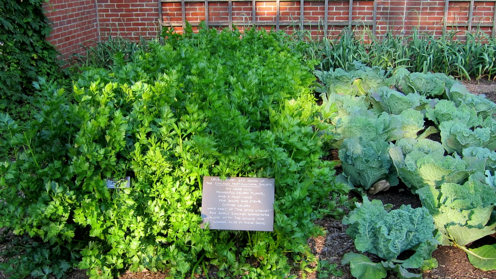

Do plants really affect their neighbors? Allelopathy, living mulch, and what the evidence supports
Some plants do change the ground for the ones beside them, and one will kill your tomatoes. The real effects look nothing like the companion chart.

Photo: cultivar413 from Fallbrook, California · CC BY 2.0, via Wikimedia Commons.
What you need
Knowing what grew there last year, not just what is there now - several of these effects outlast the plant
A note of any walnut tree within about 25 m80 feet, including next door’s
Willingness to sit with “plausible but unmeasured” as a real answer
The companion planting guide makes a fairly blunt case. The famous companion charts are folklore, and pairs of plants don’t have secret relationships that the chart’s author discovered.
That leaves an obvious question. Do plants affect the plants next to them? Yes. Several do, the mechanisms are known, and one of them is serious enough that the planner refuses the planting outright. The real effects look nothing like the chart. They’re mostly about chemistry in the soil and physics at the soil surface, they often outlast the plant that caused them, and they come with wildly different confidence.
Here they are in order of how sure anyone is. That’s the ordering that matters, and you’ll never find it on a chart.
Does any plant harm its neighbors?
Don't plant anything sensitive to walnut toxin (juglone) within a walnut tree's root zone. Nightshades are sensitive, and so are apple and cabbage.
Start here. This is the one that can cost you a season, and it’s the clearest proof that plant-to-plant chemistry is a real category.
Walnut roots give off a compound that turns into juglone, which chokes off respiration. Tomatoes, potatoes, eggplant and peppers are highly sensitive. They don’t just sulk; they wilt and die. The range is also much larger than people expect. The toxic zone reaches across the whole drip line and well beyond, which routinely means a neighbor’s tree you didn’t plant and can’t remove.
Three things set this apart from every companion-chart claim:
It’s well established, and it blocks. The planner doesn’t advise around this one; it refuses the bed outright.
There’s no treatment. You can’t amend juglone out of soil. The only answer is distance, or containers with fresh soil above the root zone.
It’s one-way, and it isn’t a “pairing”. One plant changes the chemistry of a volume of ground. That’s what a real interaction looks like, and it’s nothing like “plant basil near tomatoes.”
If you’ve got a mature walnut anywhere near the garden, this outranks every other siting question you were weighing.
Do sunflowers really suppress what grows near them?
Sunflower residue suppresses germination of some small-seeded species.
If you skip this, you lose real yield. The planner warns you.
How it works: Sunflower tissue and roots release allelochemicals that persist in the soil and inhibit the germination and early growth of sensitive plants. Small-seeded, direct-sown neighbors are the ones at risk. A small seed has little reserve to push through the inhibition, whereas a transplant is already past the germination window and largely escapes.
Evidence: checked against 1 source in the research-based literature.
Sunflowers leave chemicals behind in their residue and root exudate, and those can hold back germination in small-seeded crops direct-sown into that ground afterwards.
The word promising is carrying two things here. First, this is a residue effect. It’s about what grew there last year, so it belongs with rotation thinking more than with neighbor thinking. Second, the remedy names a real way out: transplants bypass it. The suppression acts on germination, so a seedling set into that ground with its roots already built skips the gauntlet the seed would run.
The corpus is unusually candid about the edge of this one. The study behind it tested pea, a large-seeded crop. The “small-seeded, direct-sown” scoping is the corpus’s own reasoning about who’s most vulnerable (small seeds carry less reserve to push through), and the paper doesn’t claim it. The reasoning is sound, but it’s still reasoning, so this warns and doesn’t block.
Does a living mulch affect the plants around it?
Living mulch suppresses weeds and conserves soil moisture.
If you skip this, it still grows, just less well. The planner suggests it.
How it works: A living cover keeps a leaf canopy over the ground. It intercepts light at the soil surface, so weed seedlings are shaded out before they establish, and it slows surface evaporation, so the soil holds more water. In a Three Sisters planting this is the squash's role. Its broad leaves shade the bed.
Evidence: checked against 2 sources in the research-based literature.
This one works the other way entirely. It’s physics, and it’s the one real mechanism underneath a lot of intercropping enthusiasm.
A plant with big low leaves covers the soil. Covered soil grows fewer weeds, because weed seeds need light, and it loses less water, because less evaporates from a shaded surface. That’s the whole mechanism. It’s what mulch does, done by something alive.
It’s also the actual reason the squash is in a Three Sisters mound. Those big prickly leaves shade the ground the corn is standing in. Together with the trellis role, that’s what makes the arrangement work. The famous nitrogen story isn’t part of it; the corpus refutes that.
It’s filed as a good hunch, and here’s why it isn’t rated more strongly. The mechanism isn’t in doubt, but nobody can hand you a number for how much weed suppression and water saving you get from a particular living mulch in a particular garden. A confident effect with an unmeasured size doesn’t get promoted here.
What about fennel - is that claim real?
Fennel may hold back neighboring vegetables with chemicals it releases. The evidence is thin, from lab tests mostly on weeds.
Fennel shows what this project does when the evidence runs out.
It has a real reputation as a bad neighbor, and there’s real chemical activity behind it: fennel extract holds back germination in laboratory tests. But read the corpus’s own account of the gap. The documented work is weed-directed and in the lab, and no study tests fennel suppressing a neighboring vegetable in the ground. A review that covers fennel puts it among aromatics whose extracts can be either inhibitory or stimulatory depending on the species and the concentration.
So what’s verified here is the hedge itself: the effect is plausible and poorly characterized. There’s no verified suppression effect. The rule was deliberately reworded to say exactly that.
The practical upshot is small. If you have fennel, giving it its own corner costs you nothing, and that’s about as strong a recommendation as the evidence supports. Don’t repeat “fennel suppresses everything” as though it were established, because it isn’t.
So how much should I worry about plant neighbors?
Plants do affect their neighbors. The effects that survive scrutiny share a shape:
They run through soil chemistry or surface physics. No pairwise affinity is involved.
They’re often about time more than adjacency: what grew here last year matters more than what’s beside it now.
They come with wildly different confidence, from a well-established fatal block to a good-hunch shrug. That spread is information, and nothing to be embarrassed about.
The companion chart feels more useful than this page because it never says “we don’t know.” Everything on it arrives at the same confident volume. That uniformity is the tell. Real findings don’t all come out equally certain, and a source that never varies its confidence isn’t reporting evidence.
Further reading
Good places to read more about the technique on this page. The grade on each card comes from that card’s own sources.